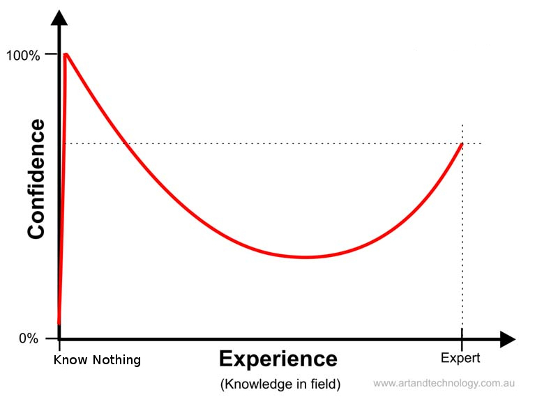

<!doctype html>
<html lang="en">
    <head>
        <meta charset="utf-8">
        <title>reveal-md</title>
        <link rel="stylesheet" href="css/reveal.css">
        <link rel="stylesheet" href="css/theme/black.css" id="theme">
        <!-- For syntax highlighting -->
        <link rel="stylesheet" href="lib/css/zenburn.css">

        <!-- If the query includes 'print-pdf', use the PDF print sheet -->
        <script>
          document.write( '<link rel="stylesheet" href="css/print/' + ( window.location.search.match( /print-pdf/gi ) ? 'pdf' : 'paper' ) + '.css" type="text/css" media="print">' );
        </script>
    </head>
    <body>

        <div class="reveal">
            <div class="slides"><section  data-markdown><script type="text/template"># Die Klausurenphase

<small>by Simon Selg, Danny Stoll, Felicitas Ritter, Leonie Feldbusch</small>
</script></section><section ><section data-markdown><script type="text/template">
## Organisatorisches
</script></section><section data-markdown><script type="text/template">
### Klausur

- [29.03, 9:00 Uhr](https://ira.informatik.uni-freiburg.de/src/teach_exam.php?id=190&exam=66)
- Unikarte nicht vergessen
- Anmeldungsbestätigung
</script></section><section data-markdown><script type="text/template">
### Fragestunden

- Gebäude 101, Seminarraum 01-009/13
- Mo 20.3 und Mo 27.3
- 14-16 Uhr
- Fragen vorbereiten!
</script></section><section data-markdown><script type="text/template">
### Klausureinsicht

- Gleich wichtig wie die Klausur selbst (!)
- Vertretung möglich
</script></section></section><section ><section data-markdown><script type="text/template">
## Lernen
</script></section><section data-markdown><script type="text/template">
### Schlaf

- 7-8h
- [Auswirkung auf Leistung](https://en.wikipedia.org/wiki/Effects_of_sleep_deprivation_on_cognitive_performance)
- [Chronotypen](https://de.wikipedia.org/wiki/Chronobiologie#Chronotypen)
</script></section><section data-markdown><script type="text/template">
### Pensum

- Maximal 8h / Tag
- Pausen
- Ausgleich
- Lernen über langen Zeitraum
</script></section><section data-markdown><script type="text/template">
### Lern Kontext

- Zeitlich verteilt
- Fokus: 25 Minuten Pomodoro
- Verschiedene Umgebungen, nicht nur Zuhause
</script></section><section data-markdown><script type="text/template">
### Lernweise

1. Stoff sichten
1. Üben
1. Klausur simulieren
</script></section><section data-markdown><script type="text/template">
### Stoff Sichtung

- Selbst testen
- Recall Technik
- Wechselnde Themen
- Pausen
</script></section><section data-markdown><script type="text/template">
### Stoff Sichtung

- Aufgaben Typ Sortierung
- Fragenkatalog
- Cheatsheet  
- Lerngruppe
</script></section><section data-markdown><script type="text/template">
### Übung

- [Altklausur Aufgaben](http://db.fachschaft1.tf.uni-freiburg.de/exams/search/course/289/examType/1/degree/14)
- Wechselnde Aufgabentypen
- Lerngruppe
- Pausen
</script></section><section data-markdown><script type="text/template">
### Klausur Simulation

- Echtbedingungen
- 1-3 [Altklausuren](http://db.fachschaft1.tf.uni-freiburg.de/exams/search/course/289/examType/1/degree/14) "aufheben"
- Selbst erstellen


</script></section></section><section ><section data-markdown><script type="text/template">
## Psyche und Lifestyle
</script></section><section data-markdown><script type="text/template">
### Schlaf

- 7-8h
- Wichtiger als alles andere
</script></section><section data-markdown><script type="text/template">
### Pausen

- Mathe / Informatik / .. ist hart
- Problemlösung entwickelt sich über Zeit

### Dunning Kruger Effekt



</script></section><section data-markdown><script type="text/template">
### Dunning Kruger Effekt

<iframe style="height: 60vh; width: 142vh;" width="560" height="315" src="https://www.youtube.com/embed/XyOHJa5Vj5Y" frameborder="0" allowfullscreen></iframe>
</script></section><section data-markdown><script type="text/template">
### Imposter Syndrome


</script></section></section><section ><section data-markdown><script type="text/template">
## Ressourcen fürs Lernen
</script></section><section data-markdown><script type="text/template">
### Klausurdatenbank

- Über die [Fachschafts-Website](http://db.fachschaft1.tf.uni-freiburg.de/exams/search/course/289/examType/1/degree/14)
- Altklausuren
- Fragenkataloge
- Zusammenfassungen
</script></section><section data-markdown><script type="text/template">
### Learning How to Learn


[Coursera Kurs, University of California](https://www.coursera.org/learn/learning-how-to-learn)

</script></section></section><section ><section data-markdown><script type="text/template">
## Klausur Inhalt
</script></section><section data-markdown><script type="text/template">
### Kodierung Teil 1

- Komplement Beweise
- Zahlendarstellung
  - Betragvorzeichen
  - Einer Komplement
  - Zweier komplement
  - Basen
  - Umwandlung
</script></section><section data-markdown><script type="text/template">
### Kodierung Teil 2

- Parity Code
- Hamming Code
  - Distanz
  - Erkennen, korrigieren
- Huffman Code
  - Präfixcode
</script></section><section data-markdown><script type="text/template">
### Kombinatorische Logik Teil 1

- Boolsche Algebra Beweise (Axiome)
- RS/SR/DLATCH Flipflop
- Arithmetische Schaltungen
  - Konstruktion
  - CRA
  - CSA
  - Multiplizierer

</script></section><section data-markdown><script type="text/template">
### Kombinatorische Logik Teil 2

- PLAs
- Schaltkreise
  - Kosten/Tiefe bestimmen
  - zeichnen und formalisieren
  - Topologische Sortierung
  - Symbolische Simulation
</script></section><section data-markdown><script type="text/template">
### Kombinatorische Logik Teil 3
- KDNF/DNF/KNF
- Hypercubes
- McCluskey
- Minimalpolynom Beweis
- Primimplikanten Tafel
  - Petrick
</script></section><section data-markdown><script type="text/template">
### Seq. Logik Teil 1

- RETI Kontrollogik / Signale
- RETI Datenpfade
  - Realisierbarkeit von Befehlen
  - Pfade für Befehl X
</script></section><section data-markdown><script type="text/template">
### Seq. Logik Teil 2

- Mealy- und Mooreautomaten
  - Zeichnen
  - Synthetisieren
- Sequentielle Synthese
  - Zustandskodierung
</script></section><section data-markdown><script type="text/template">
### Timing

- Timingdiagramme
- Spikefreies Umschalten / Pulsweite
- Kontrollogik RETI
</script></section><section data-markdown><script type="text/template">
### Verifikation

- KDNF/DNF/KNF
- BDDS
  - Umwandlung BDDs - Schaltkreise
  - Reduzierung
  - Ordnung
</script></section><section data-markdown><script type="text/template">
### RETI Assembler

- RETI Programm kommentieren/verstehen
- RETI Programm schreiben (unwarschl.)
</script></section><section data-markdown><script type="text/template">
### Sonstiges

- Timing in RETI (Datenpfade, ALU)
- Pipelining
- Caching
  - Direct Map
  - Verdrängungsstrategien
- ...
</script></section></section><section  data-markdown><script type="text/template">
## Quellen

- [Dunning Kruger Effekt](https://bfox.files.wordpress.com/2014/12/dunning-kruger-effect.jpg)
- [Person with mirror](http://bonnier.imgix.net/cdn-connect/fb1337e16b6348938dd45d2e54250ff2.jpg)
</script></section></div>
        </div>

        <script src="lib/js/head.min.js"></script>
        <script src="js/reveal.js"></script>

        <script>
            function extend() {
              var target = {};
              for (var i = 0; i < arguments.length; i++) {
                var source = arguments[i];
                for (var key in source) {
                  if (source.hasOwnProperty(key)) {
                    target[key] = source[key];
                  }
                }
              }
              return target;
            }

            // Optional libraries used to extend on reveal.js
            var deps = [
              { src: 'lib/js/classList.js', condition: function() { return !document.body.classList; } },
              { src: 'plugin/markdown/marked.js', condition: function() { return !!document.querySelector('[data-markdown]'); } },
              { src: 'plugin/markdown/markdown.js', condition: function() { return !!document.querySelector('[data-markdown]'); } },
              { src: 'plugin/highlight/highlight.js', async: true, callback: function() { hljs.initHighlightingOnLoad(); } },
              { src: 'plugin/notes/notes.js', async: true, condition: function() { return !!document.body.classList; } },
              { src: 'plugin/math/math.js', async: true },
              { src: 'plugin/math/math.js', async: true }
            ];

            // default options to init reveal.js
            var defaultOptions = {
              controls: true,
              progress: true,
              history: true,
              center: true,
              transition: 'default',
              dependencies: deps,
              math: {
                mathjax: 'https://cdn.mathjax.org/mathjax/latest/MathJax.js',
                config: 'TeX-AMS_HTML-full'
              }
            };

            // options from URL query string
            var queryOptions = Reveal.getQueryHash() || {};

            var options = {};
            options = extend(defaultOptions, options, queryOptions);
            Reveal.initialize(options);
        </script>

          <script src="/scripts/presentations"></script>
    </body>
</html>

